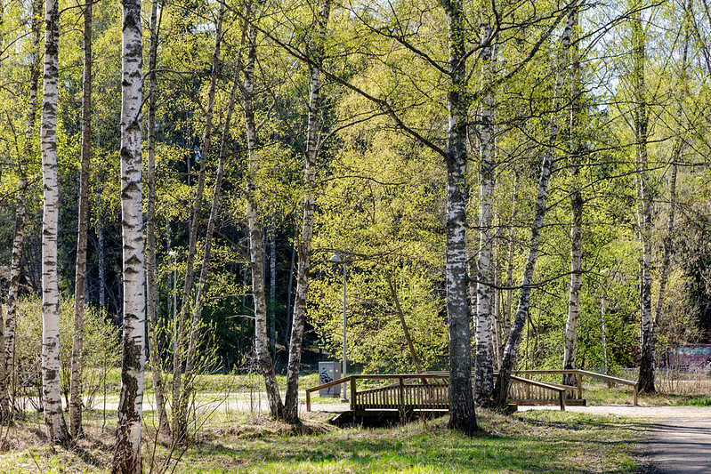

Kevät
Kevät on vuoden aika, joka sijoittuu talven ja kesän väliin. Suomessa kevät alkaa maaliskuussa ja kestää toukokuuhun asti. Keväällä päivät pitenevät ja lämpötilat nousevat, mikä johtaa luonnon heräämiseen talven jälkeen. Puut alkavat saada lehtiä, kukat puhkeavat kukkaan, ja monet eläimet palaavat talvehtimispaikoiltaan. Kevät on myös aika, jolloin monet ihmiset aloittavat puutarhanhoidon ja nauttivat ulkoilusta.
Kevätkuva

Kevätkuva Helsingin puistosta.